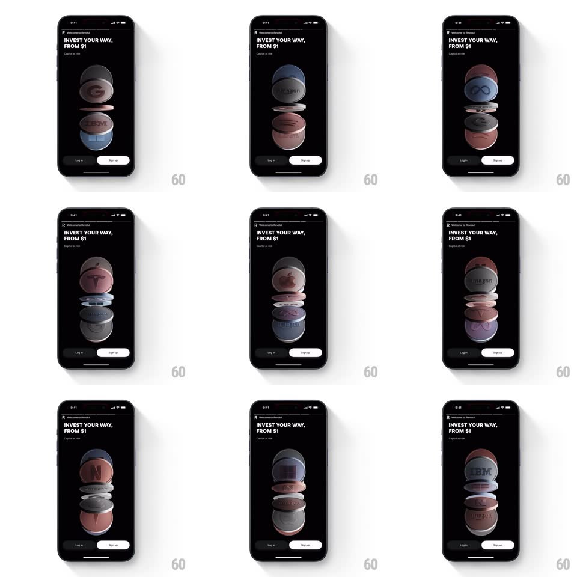

Media
Frame-by-frame

Rebuild this interaction 1:1: Revolut's investing welcome loop - on the dark "INVEST YOUR WAY, FROM $1" screen, two columns of 3D coins stamped with company logos (Google, Amazon, IBM, Tesla, Netflix) flip continuously in a staggered rhythm.

Rebuild this interaction 1:1: Revolut's investing welcome loop - on the dark "INVEST YOUR WAY, FROM $1" screen, two columns of 3D coins stamped with company logos (Google, Amazon, IBM, Tesla, Netflix) flip continuously in a staggered rhythm. ## Integration Integration: stack-agnostic spec - springs given as stiffness/damping, timed motions as duration + curve; map every value to your framework and animation library of choice. ## Scene A black screen: "Welcome to Revolut" eyebrow, headline "INVEST YOUR WAY, FROM $1" with the "Capital at risk" caption, then the hero - two vertical stacks of large metallic coins, each face showing a company logo - and "Log in" / "Sign up" pills at the bottom. ## Motion spec Pattern: staggered 3D coin flips. - Each column holds 2-3 coins, rendered as real 3D discs with visible milled edges and soft reflections. - Coins flip on a staggered schedule: each coin rotates rotateX through 360deg over 900ms (ease-in-out, slight dwell at the ends), and the next coin starts 300-400ms later - a cascading wave down each column, columns offset from each other. - Each flip cycles the face to the next company logo (G -> Amazon -> IBM -> Tesla -> Netflix...) - the face swaps at the 90deg edge-on moment. - Coins bob very slightly at rest (translateY +/-3px, offset phases) so the stacks never sit frozen. - The loop runs continuously. ## Calibration - Stagger is the rhythm - at any moment exactly one coin is mid-flip. - The edge-on moment is brief (the disc is thin) - the logo swap hides in it. ## Reduced motion Coins crossfade between logos on the same staggered schedule. ## Don't miss - Coin faces are tinted per brand (soft blue, rose, grey) - they are metallic, not flat color chips. - Reflections on the coin faces shift during the flip - the metal reacts to the turn.